Chapter 7 생존분석
7.1 생존분석
생존시간(survival time) 자료를 분석하는 통계적 방법
넓은 의미에서 생존시간이란 어떤 정의된 시점부터 특정한 사건(event)이 관측될 때까지의 시간을 의미(time to event)
여기서 사건은 환자의 사망뿐 아니라 어떤 처리에 대한 반응이나 질병의 재발 등이 될수 있음. 따라서 환자가 수술시부터 사망할 때까지의 시간, 어떤 처리를 받은 후 특정 반응을 나타낼 때까지 걸린 시간, 처치 후 재발할 때까지의 시간 등이 모두 생존시간으로 정의 될 수 있음
생존분석에는 1년 또는 3년 생존율, 환자의 절반 정도가 생존하는 시간, 실험군과 대조군의 생존분포 비교, 생존에 영향을 미칠 수 있는 여러 예후인자(prognostic factor)들 중 유의한 영향을 미치는 인자 분석 등이 있음
생존시간 데이터가 다른 데이터와 구별되는 이유 중 하나는 중도절단자료(censored data)를 포함
중도절단(censoring)은 크게 세 가지 형태로 구분
제 1 형태 (Type I censoring)
연구자에 의해 중도절단 시간이 고정된 경우. 예를 들어 임상시험에서 연구종료시점을 미리 정해 놓았을 때 환자들은 각기 다른 시간에 시험에 들어오게 되므로 연구 종료시점까지 사망이 관측되지 않는 환자의 경우 중도절단이 됨
제 2 형태 (Type II censoring)
사전에 관측할 사망자수를 정해 놓는 경우 발생. 예컨대 100마리의 동물 중 90마리가 사망하는 시점까지만 관측하는 경우
임의중도절단 (random censoring)
연구자가 제어하지 못하는 이유로 중도절단되는 경우
거주지 변경 등의 원인으로 추적 불가능 (loss to follow up)
환자의 치료겨부 또는 기타 사유로 치료 중단 (drop out)
다른 이유로 인한 사망 (unrelated event)
Event 없이 연구 종료

완전한 자료와 중도절단자료

생존시간 \(T_1, T_2, \ldots, T_n\)은 서로 독립이고 동일한 분포 \(F\)를 갖는 확률변수
중도절단시간 \(C_1, C_2, \ldots, C_n\)은 서로 독립이고 동일한 분포 \(G\)를 갖는 확률변수
생존시간 \(T_1, T_2, \ldots, T_n\)을 모두 관측하지 못하는 대신 \[X_i = min(T_i, C_i)\] \[\delta_i =I(T_i < C_i )\]
로 정의되는 \((T_1, \delta_i), (T_2, \delta_2), \ldots, (T_n , \delta_n )\)을 관측
임의중도절단의 경우 일반적으로 생존시간 \(T_i\)와 중도절단시간 \(C_i\)가 서로 독립 가정
생존시간을 \(T(\ge 0)\)라 하고 \(T\)가 확률밀도함수 \(f(t)\)와 분포함수 \(F(t)\)를 가질 때,
생존함수(survival function) \(S(t)\) \[S(t)=P(T>t)=1-F(t)\]
생존함수는 환자가 \(t\)시간 이상 생존할 확률
위험함수(hazard function) \(h(t)\) \[h(t)=\lim_{dt \rightarrow 0} P(t<T<t+dt|T \ge t)/dt=f(t)/S(t)\]
위험함수는 어떤 환자가 \(t\) 시점까지는 생존했다가 \(t\) 시점 바로 직후에 사망하게 되는 순간위험률
7.2 비모수적 생존함수 추정
생존시간의 분포를 특정하지 않는 경우 비모수적 방법(nonparameteric method)으로 생존 함수 추정 가능
중도절단이 없는 경우, 생존시간 \(x_1, \ldots, x_n\)을 순서대로 배열한 것을 \(t_1<t_2<\cdots<t_n\)이라 하면
경험적 분포함수 (empirical distribution function) \[\begin{aligned} S(t_i) &=& P(T>t_i) \\ &=& \text{생존시간이 } t_i \text{이상인 관측치수} / \text{총 관측치수}\\ &=& 1- t_i \text{까지의 사망자수} / n \end{aligned}\]
경험적 분포함수를 중단절단자료가 있는 경우로 확장한 방법이 생명표(life table)를 이용한 방법과 누적한계추정법(product-limit method)
생명표 방법은 시간의 단위로 묶어서 생존함수를 추정하며, 누적한계추정법은 환자 개개인의 생존시간을 관측하여 각 시점에서의 생존함수를 추정
7.2.1 생명표 방법
환자의 수가 상당히 많을 때에는 그들 개개의 생존시간을 고려하는 대신 생존시간을 몇 개의 구간으로 나누어 생존자료를 요약하는 방법이 필요
보험통계와 같이 데이터의 수집단계에서부터 생존시간이 1년 단위의 구간별로 나뉘어서 주어지는 경우에도 생명표 방법(life table method)이 주로 사용됨
생존시간을 \(k+1\)개의 구간 \([t_{i-1}, t_i), \,\,\, i=1, \ldots, k+1\) 으로 나눔. 이 때 \(t_0=0\)이고 \(t_{k+1}=\infty\)
\(i\)번째 구간의 시작지점에서의 생존자수를 \(n_i\), \(i\)번째 구간에서의 사망자수를 \(d_i\), \(c_i\)는 \(i\)번째 구간에서 중도절단된 인원수
구간 내에서의 생존률 \(p_i=P\)(\(i\)번째 구간에서 내내 생존\(|i\)번째 구간의 시작점에서 생존)\(=P(T>t_i|T>t_{i-1})\), 구간 내 사망률은 \(q_i = 1-p_i\)
생명표의 형태

\(i\)번째 구간의 시작시점에서의 인원수(위험그룹인원수) \(n_i\)는 \(n_i=n_{i-1}-d_{i-1}-c_{i-1}\)이며, 유효인원수(effective sample size) \(n_i'\)는 구간에서의 위험그룹인원수에서 중도절단된 인원수의 \(1/2\)을 뺀 \(n_i'=n_i-c_i/2\)
중도절단이 발생한 경우에는 그룹내내 위험에 노출된 것이 아니라 절반가량 노출되었다고 생각하여 이와 같이 인원수를 조정
\(i\)번째 구간에서의 사망률 \(q_i\)의 추정값은 \(\hat{q}_i=d_i/n_i'\), 생존률 \(p_i\)의 추정값은 \(\hat{p}_i=1-\hat{q}_i=1-d_i/n_i'\)
생존함수 \[\begin{aligned} S(t_i)&=&P(T>t_i)\\ &=&P(T>t_1)P(T>t_2|T>t_1)\cdots P(T>t_i|T>t_{i-1})\\ &=&p_1p_2\cdots p_i \end{aligned}\]
생존함수 추정 \[\hat{S}(t_i)=\prod_{k=1}^i \hat{p}_{k}=\prod_{k=1}^i(1-d_k/n_k')\]
이 때 \(\hat{S}(0)=1\)
그린우드의 공식 (Greenwood formula) - 분산 추정량 \[\hat{Var}(\hat{S}(t_i))=\hat{S}^2(t_i)\sum_{k=1}^i \frac{d_k}{n_k'(n_k'-d_k)}\]
Example

Survival curve
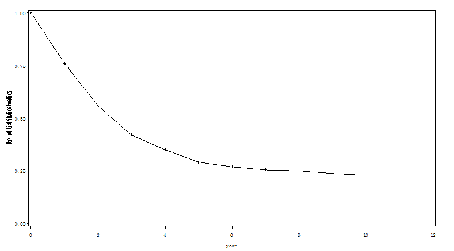
7.2.2 누적한계추정법
생존함수를 추정하는 대표적인 방법 중 하나로 연구자의 이름을 따서 카플란-마미어(Kaplan-Meier) 추정법이라고도 함
생존시간 또는 중도절단시간 \(x_1, \ldots, x_n\)을 순서대로 배열한 것을 \(t_1<t_2<\cdots<t_n\)이라 하고 \(\delta_i\)를 생존시간 \(t_i\)의 중도절단여부를 표현. 이때 중도절단인 경우 \(\delta_i=0\), 그렇지 않은 경우 \(\delta_i=1\)
시점 \(t_i\)에서 위험에 노출된 인원수, 즉 \(t_i\) 바로 직전까지 중도절단되지 않고 생존해 있던 인원수를 \(n_i\)라고 하고 사망한 사람의 수를 \(d_i\)라고 했을 때 생존함수 \(S(t)\)의 누적한계추정량은 \[\hat{S}(t)=\prod_{t_i\le t} (1-d_i/n_i)^{\delta_i}\]
누정한계추정량은 중도절단시간에서는 변하지 않고 사망이 관측되는 시점 \(x_i\)에서 \((n_i-d_i)/n_i\)를 곱해준 만큼씩 감소하는 단계함수
중도절단의 효과는 각 단계에서의 크기 \(n_i\)의 값에서 나타남
사망시간과 중도절단시간이 동일한 경우에는 사망이 중도절단보다 먼저 관측되었다고 판단
마지막 생존시간 \(t_n\)이 중도절단된 경우에는 \(t_n\) 이상의 기간에 대해서는 누적한계추정값을 정의하지 않음
분산 추정량 \[\hat{Var}(\hat{S}(t))=\hat{S}^2(t)\sum_{i:t_i\le t} \frac{d_i}{n_i(n_i-d_i)}\]
누정한계추정량은 일치성(consistency)과 근사적 정규성(asymptotic normality)을 만족하는 등 표본이 클 때 통계적 성질이 우수함
자료 표현법


Example : \(n=21\)

Example
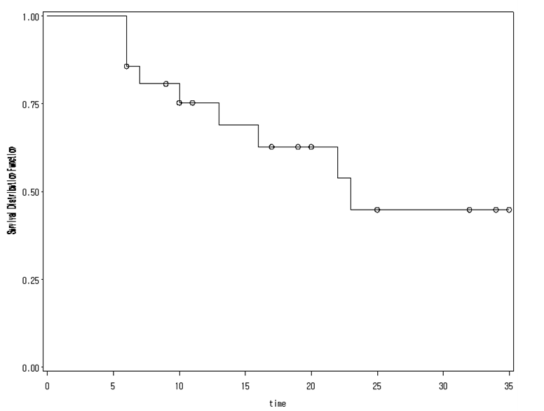
7.2.3 생존분포 비교
첫 번째 그룹의 생존시간 \(T_{11}, T_{12}, \ldots, T_{1n_1}\)은 서로 독립이며 동일한 생존함수 \(S_1\)을 갖고, 중도절단 시간 \(C_{11}, C_{12}, \ldots, C_{1n_1}\)도 서로 독립이며 동일한 분포함수 \(G_1\)을 갖는다고 하자. 마찬가지로 두 번째 그룹의 생존시간 \(T_{21}, T_{22}, \ldots, T_{2n_2}\)은 서로 독립이며 동일한 생존함수 \(S_2\)을 갖고, 중도절단 시간 \(C_{21}, C_{22}, \ldots, C_{2n_2}\)도 서로 독립이며 동일한 분포함수 \(G_2\)을 갖는다고 하자.
관측값의 형태
그룹 1: \((x_{11},\delta_{11}), (x_{12},\delta_{12}), \ldots, (x_{1n_1},\delta_{1n_1})\)
그룹 2: \((x_{21},\delta_{21}), (x_{22},\delta_{22}), \ldots, (x_{2n_1},\delta_{2n_2})\)
여기서 \(x_{ij}=min(T_{ij},C_{ij})\)이고 \(\delta_{ij}\)는 중도절단을 나타내는 가변수(\(\delta_{ij}=0\): 중도절단)
특정시점에서의 생존률 비교
가설 \(H_0 : S_1(t_k )= S_2(t_k) \,\,\, vs. \,\,\, H_1 : S_1(t_k) \ne S_2(t_k)\)
검정통계량 \[Z=\frac{\hat{S}_1(t_k)-\hat{S}_2(t_k)}{\sqrt{\hat{Var}(\hat{S}_1(t_k))+\hat{Var}(\hat{S}_2(t_k))}} \sim N(0,1)\]
생존함수의 총괄적 비교
가설 : \(H_0 : S_1=S_2 \,\,\, vs. \,\,\, H_1 : S_1 \ne S_2\)
두 생존분포의 비교에 주로 사용되는 기법은 Mantel-Haenszel의 로그 순위 검정법(log-rank test)
\(t_1 < t_2 < \cdots < t_k\)를 두 그룹의 자료를 섞었을 때 관측된 사망시간을 순서대로 놓은 것이라고 하면, 모든 \(t_i\)에서 다음과 같은 \(2\)차원 분할표를 작성함

검정통계량 \[T=\frac{\left( \sum_{i=1}^k (d_{1i}-E_{1i}) \right)^2}{\sum_{i=1}^k V_{1i}} \sim \chi(1)\]
\(E(d_{1i})=E_{1i}=n_{1i}d_i/n_i\), \(Var(d_{i1})=V_{1i}=\frac{n_{1i}n_{2i}}{n_1-1}\frac{d_i(n_i-d_i)}{n_i^2}\)
로그 순위 통계량은 각 시점에서 동일한 비중을 가짐. 따라서 대안으로 다음과 같은 각 시점의 가중치를 다르게 한 통계량을 고려할 수 있음 \[T=\frac{\left( \sum_{i=1}^k w_i(d_{1i}-E_{1i}) \right)^2}{\sum_{i=1}^k w_i^2V_{1i}} \sim \chi(1)\]
\(w=1\)인 경우 로그 순위 통계량이 됨
\(w_i=n_i\)이면 Gehan의 검정통계량이 되며, 이때 가중값은 각 시점에서 위험에 쳐해 있는 인원수에 비례함
두 그룹의 위험률의 비가 상수일 때 즉, 교차하지 않을 때 로그 순위 검정법이 선호되며, 그렇지 않은 경우에는 다른 가중치를 주는 방법을 선호
\(k(\ge 3)\)개의 그룹이 모두 동일한 생존분포를 가지는지 알아내기 위한 검정법도 존재. 크루스칼-왈리스 검정법을 중도절단자료의 경우로 확장시킨 형태와 유사
7.3 모수적 생존함수 추정과 회귀모형
7.3.1 지수분포
생존시간의 분포형태가 알려져 있을 경우에는 비모수적인 방법보다 모수적인 방법을 이용하는 것이 더 효율적
생존시간의 분포가 지수분포(exponential distribution)인 경우 :
모수적 위험함수의 가장 단순한 형태로써 위험률이 시간에 대해 일정함
확률밀도함수: \(f(t)=\lambda e^{-\lambda t}\)

생존함수: \(S(t)=e^{-\lambda t}\)

위험함수: \(h(t)=\lambda\)

7.3.2 와이블분포
지수분포의 일반화된 형태로 생존분석에서 가장 많이 사용되는 분포
확률밀도함수: \(f(t)=\lambda p(\lambda t)^{p-1} exp(-(\lambda t)^p)\)

생존함수: \(S(t)=exp(-(\lambda t)^p)\)
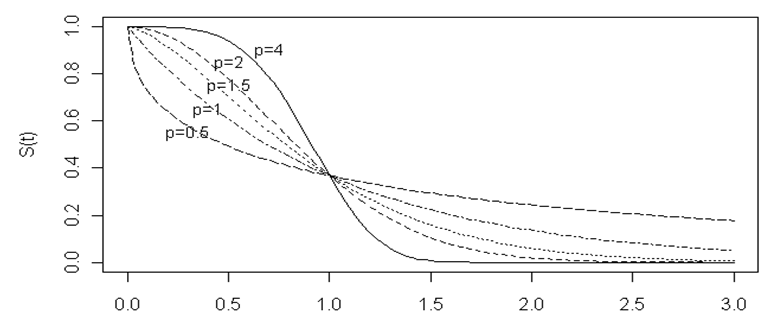
위험함수: \(h(t)=\lambda p(\lambda t)^{p-1}\)
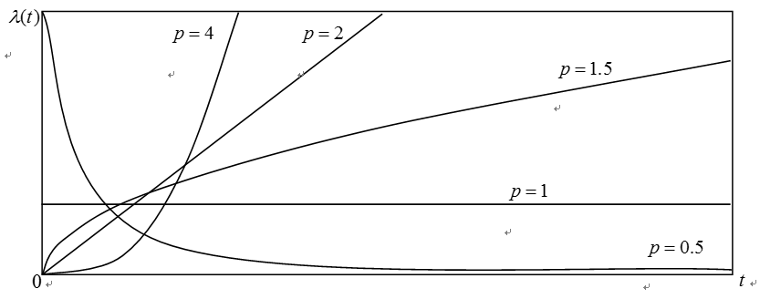
7.3.3 감마분포
확률밀도함수: \(f(t)=\frac{\lambda^k}{\Gamma(k)}t^{k-1}exp(-\lambda t)\)
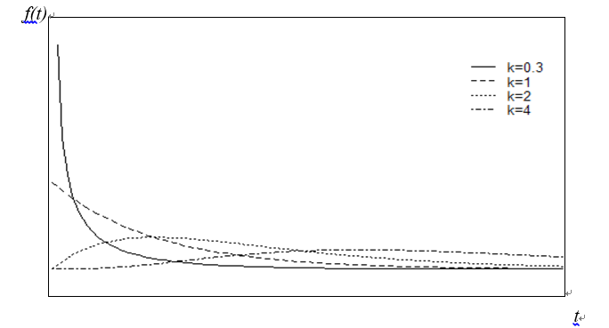
생존함수
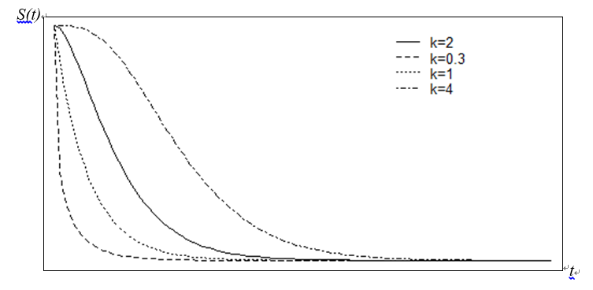
위험함수

7.3.4 로그정규분포
확률밀도함수: \(f(t)=\frac{1}{\sqrt{2\pi}}pt^{-1}exp(\frac{-p^2 (log\lambda t)^2}{2})\)

생존함수: \(S(t)=1-\Phi(plog\lambda t)\)
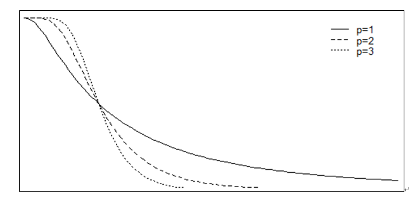
위험함수
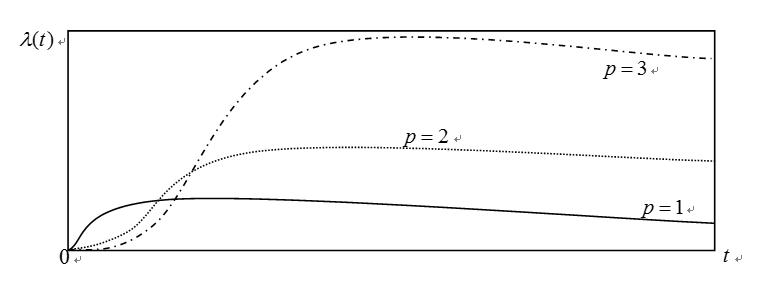
7.3.5 로그로지스틱분포
와이블분포와 함게 생존분석에 자주 사용되는 분포
확률밀도함수: \(f(t)=\lambda p(\lambda t)^{p-1}[1+(\lambda t)^p]^{-2}\)
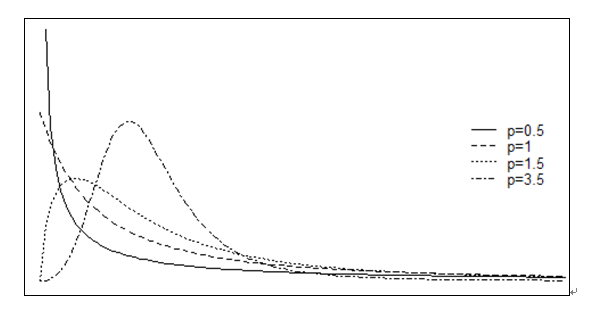
생존함수: \(S(t)=\frac{1}{1+(\lambda t)^p}\)

위험함수: \(h(t)=\frac{\lambda p(\lambda t)^{p-1}}{1+(\lambda t)^p}\)

7.3.6 곰페르츠분포
로그(위험함수)가 시간에 대한 선형함수 형태
위험함수: \(h(t)=exp(\lambda +\gamma t)\)

7.3.7 회귀모형(AFT)
곰페르츠와 와이블분포는 특정조건에서 지수분포로 되며, 지수분포와 같지 않을 때 두 분포의 위험함수는 시간이 증가함에 따라 단조증가 또는 단조감소하는 형태를 가짐
생존시간에 영향을 미치는 요인(공변량)들 \(x_1, \ldots , x_p\)가 있을 때 각 분포의 위험함수에 대한 회귀모형
지수분포 : \(logh(t)=\alpha_0 + \alpha_1 x_1 + \cdots + \alpha_px_p\)
곰페르츠분포 : \(logh(t)=\alpha t + \alpha_0 + \alpha_1 x_1 + \cdots + \alpha_px_p\)
와이블분포 : \(logh(t)=\alpha logt +\alpha_0 + \alpha_1 x_1 + \cdots + \alpha_px_p\)
\(x\)가 한 단위 증가할 때 \(logh(t)\)가 \(\alpha\)만큼 증가하는 모형
AFT 모형은 공변량의 영향으로 사망시간이 가속화된다는 의미로, 생존시간에 영향을 주는 \(p\)개의 공변량 \(x_1, \ldots, x_p\)가 있을 때의 생존시간을 \(T\)로 하고 이들 공변량의 값이 \(0\)인 경우의 생존시간을 \(T_0\)로 했을 때 다음의 모형을 가정 \[T=exp(\beta_0 + \beta_1 x_1 + \cdots + \beta_p x_p )T_0^\sigma\]
양변에 로그를 취하면 \[logT=\beta_0 +\beta_1 x_1 + \cdots + \beta_p x_p +\sigma e\]
여기서 \(e\)는 오차항, \(\sigma\)는 척도모수(scale parameter), \(\beta_0\)는 위치모수(location parameter)

다음은 \(40\)명의 폐암환자들의 생존시간을 조사한 것이다. \(40\)명의 환자 중
\(21\)명은 처리 1 (standard)에, 나머지 \(19\)명은 처리 2 (test)에
할당되었으며, 생존시간에 영향을 미칠 것으로 생각되는 공변량들은 다음과
같다.
\(x_1\): 진단시의 환자상태 (performance status: 0점-100점)
\(x_2\): 환자의 나이 (단위: 년)
\(x_3\): 진단 후 연구참여시까지의 시간 (단위: 월)
TYPE: 종양의 유형 (squamous=1, small=2, adeno=3, large=4)

Results

Results - 지수분포: \(t\,\,\, vs. \,\,\, -logS(t)\)
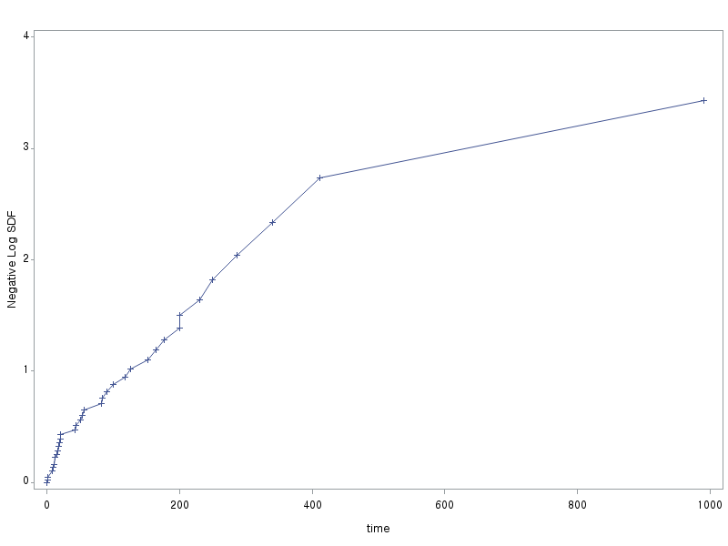
Results - 와이블분포: \(logt\,\,\, vs. \,\,\, log(-logS(t))\)
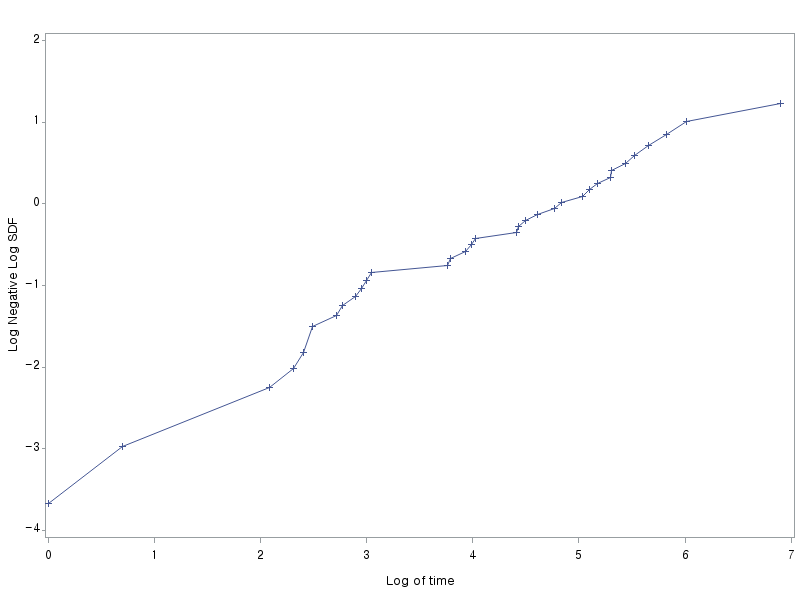
Results - 로그-정규분포: \(logt\,\,\, vs. \,\,\, \Phi^{-1}(1-S(t))\)

Results - 로그-로지스틱분포: \(logt\,\,\, vs. \,\,\, log[(1-S(t))/S(t)]\)

7.4 Cox 비례위험모형
모수적 모형은 가정이 타당할 때는 효울적이지만 어떤 모형이 적당한가에 대한 사전 지식 없이 사용하기 어려움
Cox의 비례위험모형(proportional hazards model)은 준모수적(semi-parameteric) 방법으로써 생존시간의 분포에 대한 가정을 필요로 하지 않음
Cox PH 모형은 시간에 따라 바뀌는 공변량(time-dependent variable)의 경우에도 분석할 수 있음
생존자료의 분석에서 자주 사용되는 모형으로 Cox 회귀분석(Cox regressin analysis) 이라고도 함
생존시간을 \(T\), 영향을 주는 \(p\)개의 공변량 \(x_1, \ldots, x_p\)이 있을 때, Cox PH model: \[h(t)=h_0(t)exp(\beta_1 x_1+\cdots +\beta_p x_p)\]
여기서 \(h(t)\)는 공변량들을 고려했을 때의 위험함수(hazard function), \(h_0(t)\)는 기저위험함수(baseline hazard function) (예를 들어 공변량의 값들이 모두 0일 때의 위험함수의 값)
양변에 로그를 취하고 \(\alpha(t)=logh_0(t)\)로 놓으면 \[log h(t)=\alpha(t)+\beta_1x_1+\cdots+\beta_px_p\]
만약 \(\alpha(t)=\alpha_0\)로 놓으면 지수모형과 같은 형태
만약 \(\alpha(t)=\alpha_0 + \alpha t\)로 놓으면 곰페르츠 모형과 같은 형태
만약 \(\alpha(t)=\alpha_0 + \alpha logt\)로 놓으면 와이블 모형과 같은 형태
Cox 모형은 분포의 선택이 필요하지 않으며, \(\alpha(t)\)의 형태가 어떤 것이든 무관
"비례위험모형"의 의미는 어느 환자의 위험률과 다른 환자의 위험률의 비가 시간에 대해 일정하다는 것을 의미
예를 들어, \(i\)번째 환자와 \(j\)번째 환자의 위험함수의 비는 \[h_i(t)/h_j(t)=exp(\beta_1(x_{i1}-x_{j1})+\cdots+\beta_p(x_{ip}-x_{jp}))\]
가 되어 기저위험함수는 상쇄되어 없어지고 위험함수의 비는 시간에 대해서 상수로 됨
비례위험의 가정이 맞다면, 두 환자에 대해 시간 \(t\)에 따른 \(log\hat{h}(t)\) 또는 \(log(-log\hat{S}(t))\)의 그래프가 평행하게 되어야 함
다음은 \(40\)명의 폐암환자들의 생존시간을 조사한 것이다. \(40\)명의 환자 중
\(21\)명은 처리 1 (standard)에, 나머지 \(19\)명은 처리 2 (test)에
할당되었으며, 생존시간에 영향을 미칠 것으로 생각되는 공변량들은 다음과
같다.
\(x_1\): 진단시의 환자상태 (performance status: 0점-100점)
\(x_2\): 환자의 나이 (단위: 년)
\(x_3\): 진단 후 연구참여시까지의 시간 (단위: 월)
TYPE: 종양의 유형 (squamous=1, small=2, adeno=3, large=4)
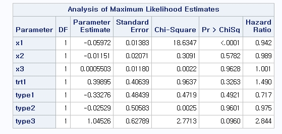

7.4.1 시간에 따라 변화하는 공변량이 있을 경우
일반적으로 공변량(covariate)이 시간에 의존하지 않고 일정한 경우에 대한 모형을 다루었음
환자의 혈압이나 백혈구의 수, 혈청표지의 수준 등은 중요한 요인이면서 연구 도중 변화하는 공변량임
심장이식과 같이 연구기간 동안 시간에 따라 상태가 달라지는 공변량이 존재
시간에 따라 변화하는 공변량을 고려한 Cox PH 모형 \[log h(t)=\alpha(t)+\beta_1 x_1 +\cdots +\beta_p x_p + \beta_{p+1}x_{p+1}(t)\]
Results


Results

7.5 경쟁위험모형
생존 자료의 통계적 분석 상의 문제점 : 각 실험 개체에 대해 생존시간과 중도절단이 하나만 관측됨
생존 자료의 통계적 분석을 위해 추가되는 가정 : 생존시간의 분포와 중도절단까지 시간의 분포가 서로 독립을 가정
모든 원인에 대한 암 사망률이 아닌 특정 원인에 대한 암 사망률이 관심있는 경우 : 암환자의 특정원인에 의한 암 사망까지의 시간과 다른 원인에 의한 암 사망까지의 시간은 독립인가 아닌가?
각 실험개체들이 두개 이상의 원인에 의한 사건 발생 위험에 노출되는 상황에서 만들어진 자료에 대한 분석 : 특정 원인에 의한 사건에 대한 분석을 위해 “경쟁위험”을 고려한 방법으로 접근
각 개체들이 둘 이상의 위험에 노출이 되었고 그 중 하나의 사건이 발생하면 다른 사건들이 발생할 위험들이 사라지는 경우 이 위험들을 경쟁위험(competing risks)이라 함
ex) HIV 양성반응을 가지는 사람들은 AIDS에 걸릴 위험과 (AIDS에 걸리기 전) 사망할 위험에 동시에 노출됨. 이때 각 사람들은 두 가지 경우 중 하나만 발생하므로 이 두 사건은 다른 사건에 대해 경쟁위험임
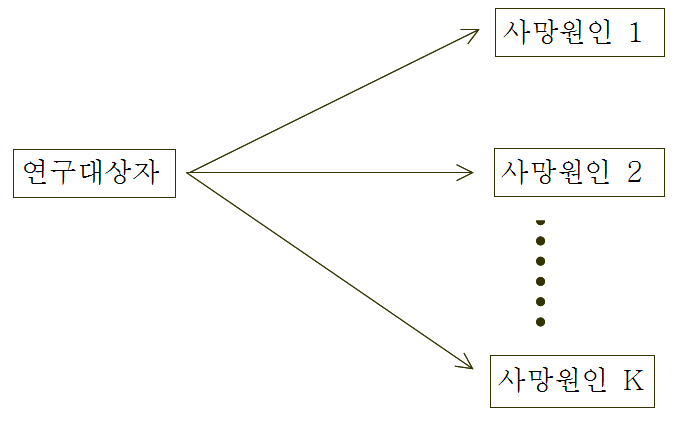
두 개의 경쟁위험과 두 개의 치료집단을 가지는 자료의 경우

두 경쟁위험을 묶어서 하나의 event로 계산한 생존곡선의 추정과 검정은 통계적으로 올바름 - 동일한 개체의 "경쟁"효과로 생기는 통계적 문제 해결
두 event 중 하나의 event 발생에 대한 치료효과의 차이를 연구하는 임상학자에게는 유용하지 않음
한 event의 발생 패턴을 보기 위해 다른 사상의 발생을 중도절단으로 처리하는 경우
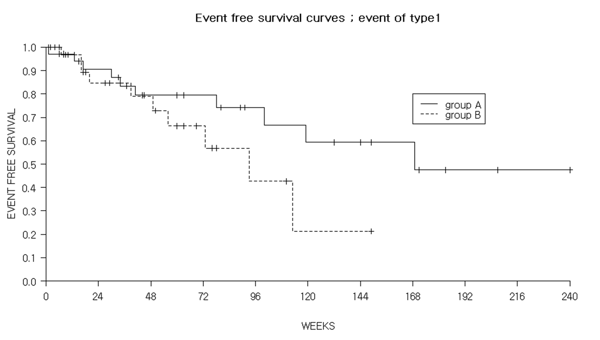

두 사상의 발생패턴 모두 치료집단 간에 차이가 나서 나온 결과라기보다는 각 사상별 생존곡선을 추정하기 위해 사용된 방법에 문제가 있는 것으로 보임
7.5.1 원인별 누적발생함수
원인별 위험함수(cause-specific hazard function) \[\lambda_j(t)=\lim_{h->0}\frac{P(t<T<t+h , \epsilon=j |T \ge t)}{h}, \,\,\, j=1, \ldots, K\]
원인별 위험함수는 다른 모든 사건 원인들이 존재할 때, \(t\) 시점에서 특정원인 \(j\)에 의한 실패가 일어날 확률을 의미
Overall hazard function \[\lambda(t)=\sum_{j=1}^K \lambda_j(t)\]
Overall hazard function은 \(t\) 시점에 어떤 원인에 의해서든지 실패할 확률을 의미
원인별 누적발생함수(cause-specific cumulative incidence function(CIF)) \[F_j(t)=P(T \le t, \epsilon=j)=\int_0^t \lambda_j(t) S(t)dt, \,\,\, j=1,\ldots, K\]
여기서 \(S(t)\)는 \[S(t)=exp \left\lbrace -\int_o^t \sum_{j=1}^K \lambda_j(t)dt \right\rbrace\]
CIF는 모든 다른 실패 원인이 존재할 때, \(t\) 시점까지 원인 \(j\)에 의해 실패할 확률을 의미
\(j\)번째 누적발생함수는 다른 원인별 위험함수와 서로 연관되어 있음
누적발생함수 추정량 \[\hat{F}_j(t)=\sum_{m:t_m \le t}\hat{\lambda}_j (t_m)\hat{S}(t_{m-1})\]
여기서 \[\hat{\lambda}_j (t_m)=\frac{d_{jm}}{n_m}, \,\,\,\,\, \hat{S}(t_{m-1})=\prod_{i=1}^{m-1} \left( 1-\frac{d_i}{n_i}\right)\]
\(t_m\): 모든 원인에 의한 사건 시점을 합친 것들 중에 \(m\)번째 실패 시간
\(d_{jm}\): \(t_m\) 시점에 원인 \(j\) 의한 실패수
\(d_m=\sum_{j=1}^K d_{jm}\): \(t_m\) 시점에서의 모든 원인의 실패수
\(n_m\): \(t_m\) 시점에서 위험 그룹에 속해 있는 개체수
Ordering of the functions
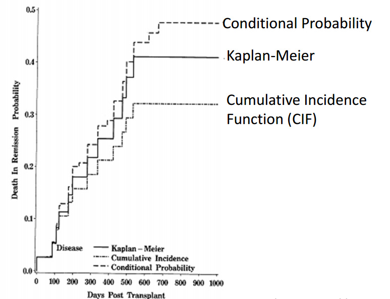
7.5.2 원인별 위험함수
원인별 위험함수(cause-specific hazard function(CSH))를 설명하기 위해 다음의 비례위험모형을 가정 \[\lambda_j(t;x_i)=\lambda_{j0}(t)exp(\beta'_jx_i) , \,\,\, j=1,\ldots, K\]
여기서 \(j\)번째 원인별 위험함수는 실패 원인에 따라 정의되며, 관심 원인을 제외한 나머지 원인은 모두 중도절단으로 처리
원인별 위험함수에서 추정된 회귀계수는 다른 원인의 위험률이 전혀 반영되지 않음
경쟁위험모형에서는 원인들이 서로 독립적이지 않는 한, 해석 상의 문제점이 발생 할 수 있음
7.5.3 누적발생함수에 대한 회귀분석
일반적으로 누적발생함수(CIF)에 대한 공변량의 효과와 원인별 위험함수(CSH)에 대한 공변량의 효과는 서로 다르게 나타남
CIF \(F_j(t)\)는 \(j\)번째 원인의 위험함수뿐만 아니라다른 원인들의 위험함수들의 결합 형태이므로 다른 원인들의 위험함수의 영향을 받음
Fine and Gray (1999)는 subdistribution에 근거한 회귀모형을 통해 누적발생함수를 추정하고자 하였으며, 여기서 subdistribution은 \(\lim_{t->\infty}F_j(t)=Pr(\epsilon=j)\)로부터 유래한 것으로 \(K\)개의 원인별 분포함수라는 의미임
공변량을 포함한 subdistribution 위험함수 \[\begin{aligned} \lambda _{j}^s (t; x) &=& \lim _{h->0} \left\lbrace \frac{Pr[t \le T_j < t+h , | (T \ge t) \cup (T \le t, \epsilon \ne j), x} {h} \right\rbrace \\ &=& \frac{d F_j (t,x)/ dt} {1-F_j (t), x} = - \frac{d log (1-F_j (t,x))} {dt} \end{aligned}\]
여기서 \(x\)는 공변량 벡터이며, 원인별 위험함수와 가장 큰 차이점은 위험함수의 정의임
subdistribution에서는 다른 유형으로 이미 사망한 사람도 위험 그룹에 포함함
subdistribution에 근거한 회귀모형 \[\lambda_j^s (t, x)=\lambda_{j0}^s (t) exp(x(t)\beta)\] \[F_j(t,x)=1-exp\left( -\int_0^t \lambda_j^s (t,x) dt \right)=1-exp \left(-\int_0^t \lambda_{j0}^s (t) exp(x(t)\beta) dt \right)\]
회귀계수 \(\beta\)가 양수이면 \(F_j(t,x)\)는 공변량 \(x\)에 대해 단조 증가함수가 되므로, 공변량 \(x\)가 증가함에 따라 동일한 시점에서 \(F_j(t,x)\)도 증가
즉, 회귀계수 \(\beta\)가 양수이면 공변량 \(x\)가 증가함에 따라 \(t\)시점까지 원인 \(j\)에 의해 failure가 발생할 확률도 증가
중도절단시점에 대한 정의
Administrative censoring time
Inverse probability censoring weighting (IPCW)
Multiple imputation
IPCW 방법에서는 중도절단 시간을 추정하기 위해 다음을 정의 \[r_i(t)=I(C_i \ge T_i \wedge t)\]
즉, \(t\) 시점까지 \(i\)번째 개체가 (i) 중도절단되지 않았거나 또는 (ii) 사건발생을 경험하였다면 \(1\)의 값을 가지며, 중도절단이 먼저 일어나면 \(0\)의 값을 가짐
중도절단에 대한 생존함수 \(G(t)\)의 추정량 \(\hat{G}(t)\)는 자료 \((X_i , 1-\delta_i)\), \(X_i=min(T_i, C_i)\)를 이용하여 \(KM\) 추정량을 통해 구함. 이를 이용하여 다음의 가중값을 정의 \[w_i(t)=r_i(t)\frac{\hat{G}(t)}{\hat{G}(X_i \wedge t)}\]
7.6 SAS 실습
7.6.1 생명표 방법
다음은 협심증(angina pectoris)이 있는 \(2,418\)명의 남성들에 대한 생존자료이다. 진단시점부터 사망할 때까지의 시간이 생존시간으로 계산되었으며, \(1\)년 간격으로 표가 작성되었다. 이 생명표에서 경과기간에 따른 생존확률을 구해보자.
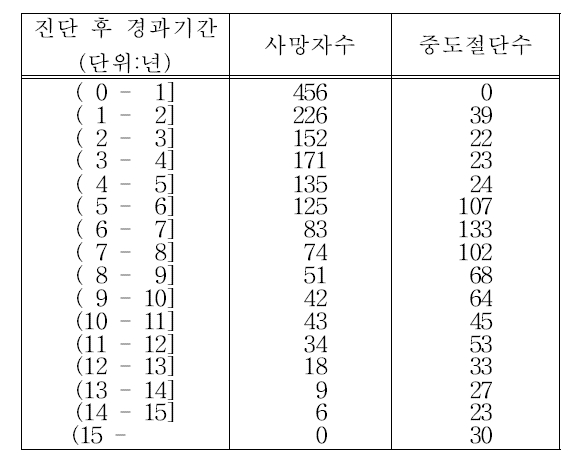
SAS Code
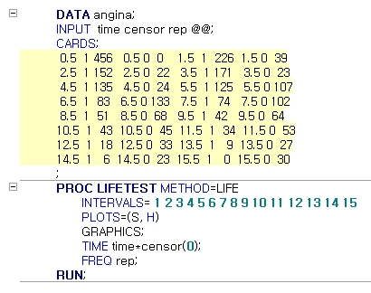

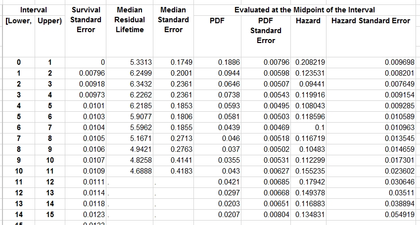
Results - Survival function
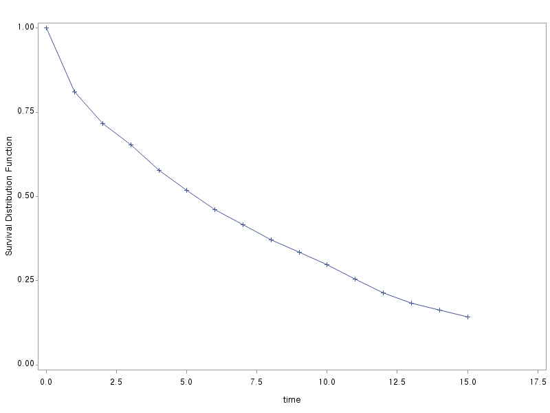
Results - Hazard function

7.6.2 누적한계추정법
다음은 신장이식수술을 받은 \(15\)명 환자들의 호전기간(remission duration) (단위: 일)이다. 여기서 \(+\)로 표시된 것은 중도절단된 자료이다. 생존함수를 추정하라.
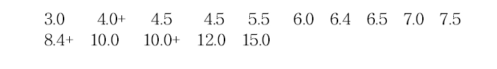
SAS Code

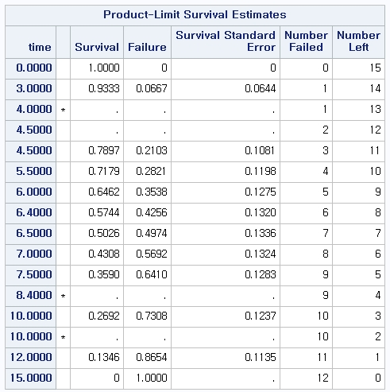
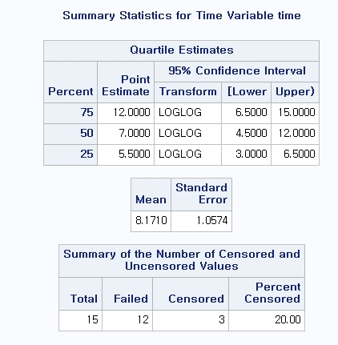

7.6.3 생존분포 비교
다음은 \(30\)명의 2기-4기 사이의 흑생종(melanoma) 환자들에 대한 연구로서 BCG와 CP(coryne-bacterium parvum) 면역법의 생존시간 연장효과를 비교하기 위해 얻은 자료이다. 환자들 중 11명은 BCG처리를 받았으며 나머지 19명은 CP처리를 받았다. 두 그룹의 환자에 대한 생존시가늘 조사하여 중도절단된 자료는 \(+\)로 표시하였다. 두 그룹 간에 생존분포의 차이가 있는지 알아보자.

SAS Code
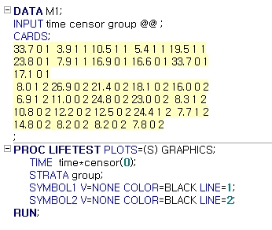
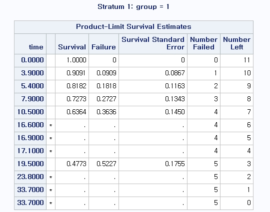
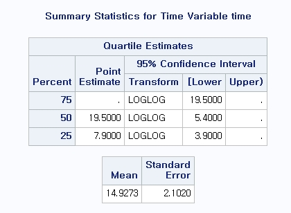


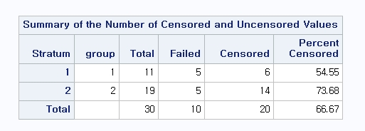
Results - Survival functions

Results - Log rank and Gehan(Wilcoxon) tests

7.6.4 Parametric Model
다음은 \(40\)명의 폐암환자들의 생존시간을 조사한 것이다. \(40\)명의 환자 중
\(21\)명은 처리 1 (standard)에, 나머지 \(19\)명은 처리 2 (test)에
할당되었으며, 생존시간에 영향을 미칠 것으로 생각되는 공변량들은 다음과
같다.
\(x_1\): 진단시의 환자상태 (performance status: 0점-100점)
\(x_2\): 환자의 나이 (단위: 년)
\(x_3\): 진단 후 연구참여시까지의 시간 (단위: 월)
TYPE: 종양의 유형 (squamous=1, small=2, adeno=3, large=4)
SAS Code

Results - 지수분포: \(t\,\,\, vs. \,\,\, -logS(t)\)
Results - 와이블분포: \(logt\,\,\, vs. \,\,\, log(-logS(t))\)
Results - 로그-정규분포: \(logt\,\,\, vs. \,\,\, \Phi^{-1}(1-S(t))\)
Results - 로그-로지스틱분포: \(logt\,\,\, vs. \,\,\, log[(1-S(t))/S(t)]\)
SAS Code - 지수분포
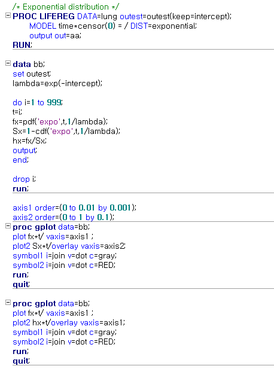
Results - 지수분포: \(t\,\,\, vs. \,\,\, f(t)\) and \(t\,\,\, vs. \,\,\, S(t)\)

Results - 지수분포: \(t\,\,\, vs. \,\,\, f(t)\) and \(t\,\,\, vs. \,\,\, h(t)\)
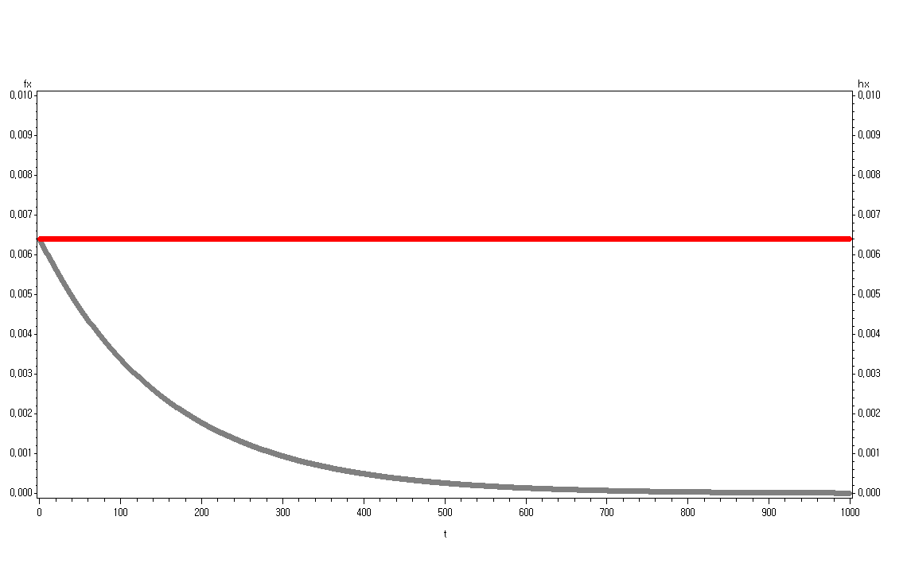
SAS Code - 와이블분포

Results - 와이블분포: \(t\,\,\, vs. \,\,\, f(t)\) and \(t\,\,\, vs. \,\,\, S(t)\)

Results -와이블분포: \(t\,\,\, vs. \,\,\, f(t)\) and \(t\,\,\, vs. \,\,\, h(t)\)
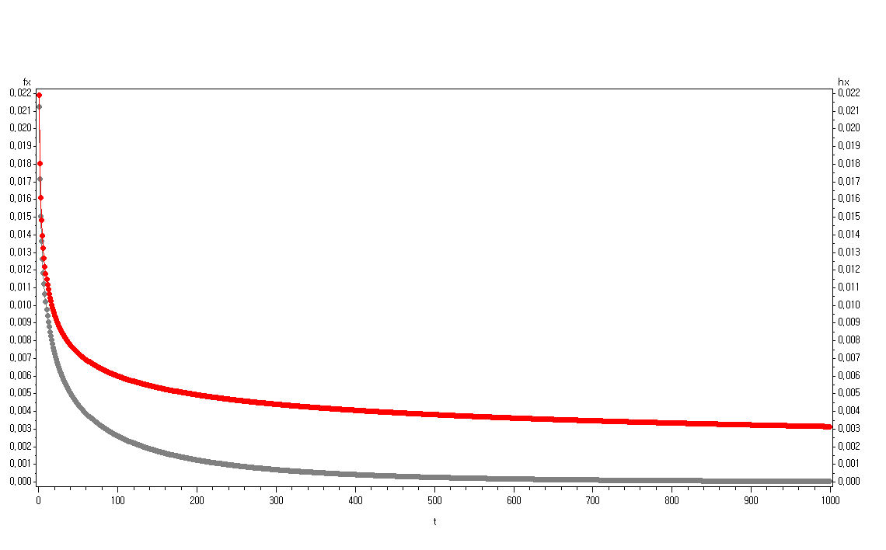
SAS Code - 로그노말분포
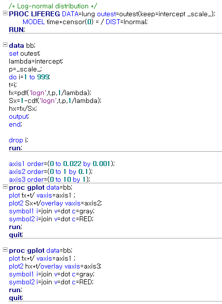
Results - 로그노말분포: \(t\,\,\, vs. \,\,\, f(t)\) and \(t\,\,\, vs. \,\,\, S(t)\)
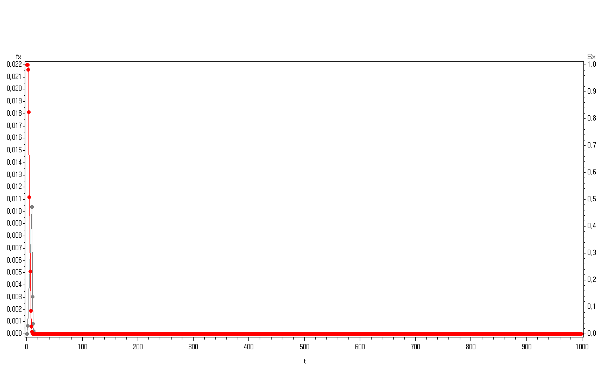
Results -로그노말분포: \(t\,\,\, vs. \,\,\, f(t)\) and \(t\,\,\, vs. \,\,\, h(t)\)
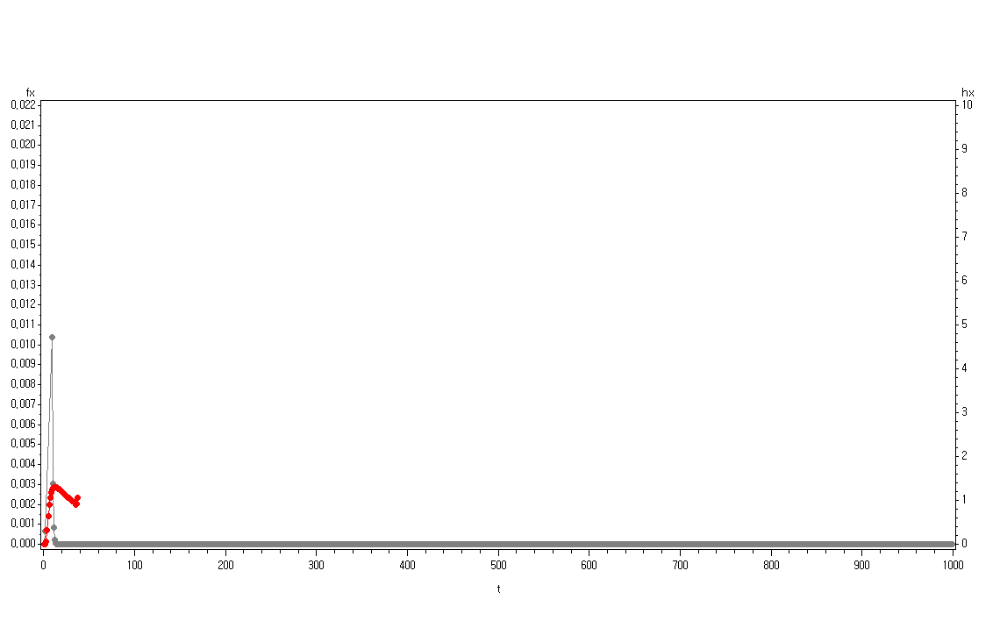
SAS Code - 로그로지스틱분포

Results - 로그로지스틱분포: \(t\,\,\, vs. \,\,\, f(t)\) and \(t\,\,\, vs. \,\,\, S(t)\)

Results -로그로지스틱분포: \(t\,\,\, vs. \,\,\, f(t)\) and \(t\,\,\, vs. \,\,\, h(t)\)
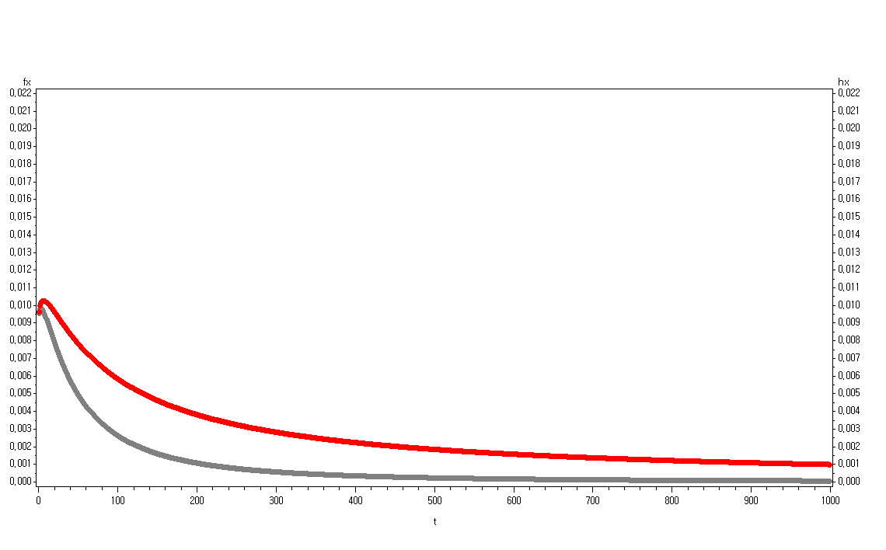
Results - AIC
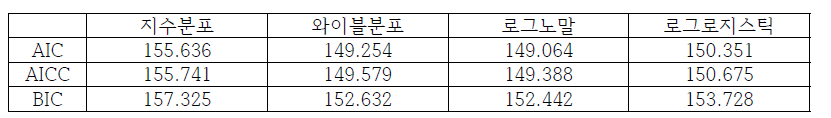
7.6.5 AFT model
SAS Code
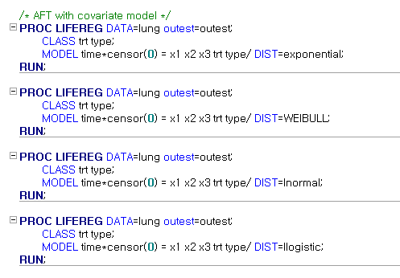
Results - 지수 AFT
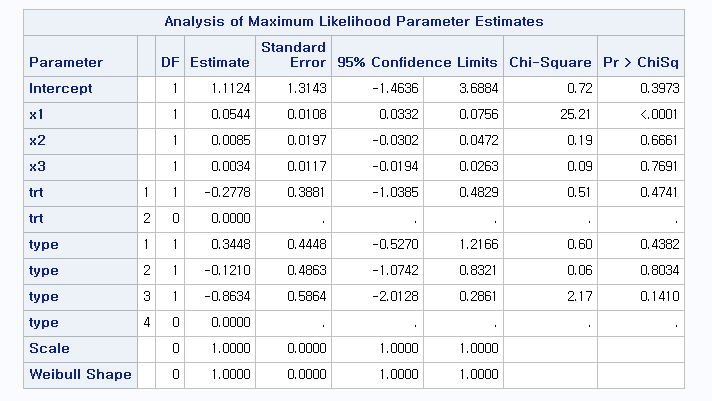
Results - 와이블 AFT

Results - 로그노말 AFT
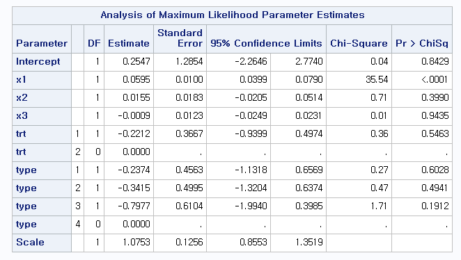
Results - 로그로지스틱 AFT
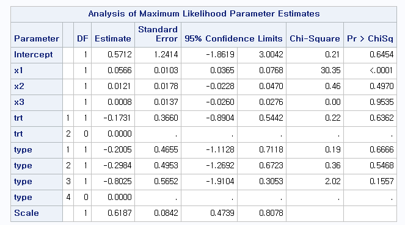
Results - AIC

7.6.6 Cox 비례위험모형
다음은 \(40\)명의 폐암환자들의 생존시간을 조사한 것이다. \(40\)명의 환자 중
\(21\)명은 처리 1 (standard)에, 나머지 \(19\)명은 처리 2 (test)에
할당되었으며, 생존시간에 영향을 미칠 것으로 생각되는 공변량들은 다음과
같다.
\(x_1\): 진단시의 환자상태 (performance status: 0점-100점)
\(x_2\): 환자의 나이 (단위: 년)
\(x_3\): 진단 후 연구참여시까지의 시간 (단위: 월)
TYPE: 종양의 유형 (squamous=1, small=2, adeno=3, large=4)
SAS Code

Results - 비례성 검토

SAS Code - 비례성검토를 위한 plot

7.6.7 Cox 비례위험모형 - time dependent covariate
다음은 Stanford 심장 이식 프로그램 대기자에 대한 생존 자료이다.
surv1: survival time, dead: censoring(0), death(1)
plant: receved tranplant 1=yes
surg: prior bypass surgery 1=yes
ageaccpt: year of acceptance

SAS Code
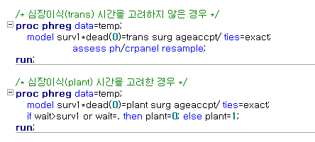
Results - 시간을 고려하지 않은 경우
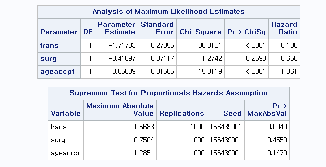
Results - 시간을 고려한 경우

7.6.8 Competing Risks
다음은 급성 백혈병(acute leukemia) 치료를 위한 골수이식술에 대한 생존
자료이다.
Group: ALL, AML low-risk, AML high-risk
T: disease-free survival time in days
Status: censoring(0), relapse(1), death(2)
Waittime: waiting time for transplant
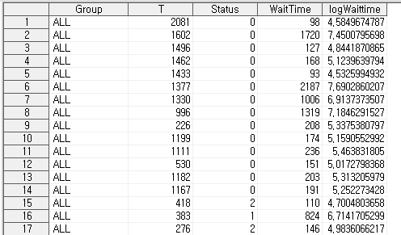
SAS Code

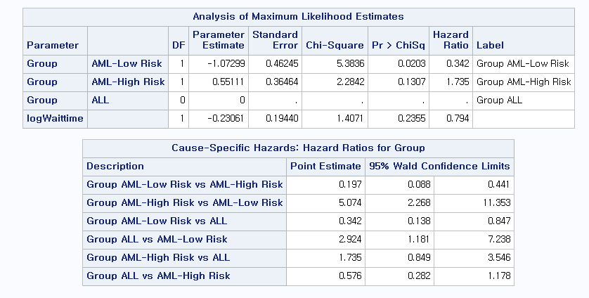
Results - Fine and Gray Model

Results - CIF

SAS Code

Results - CIF

Results - Gray’s Test